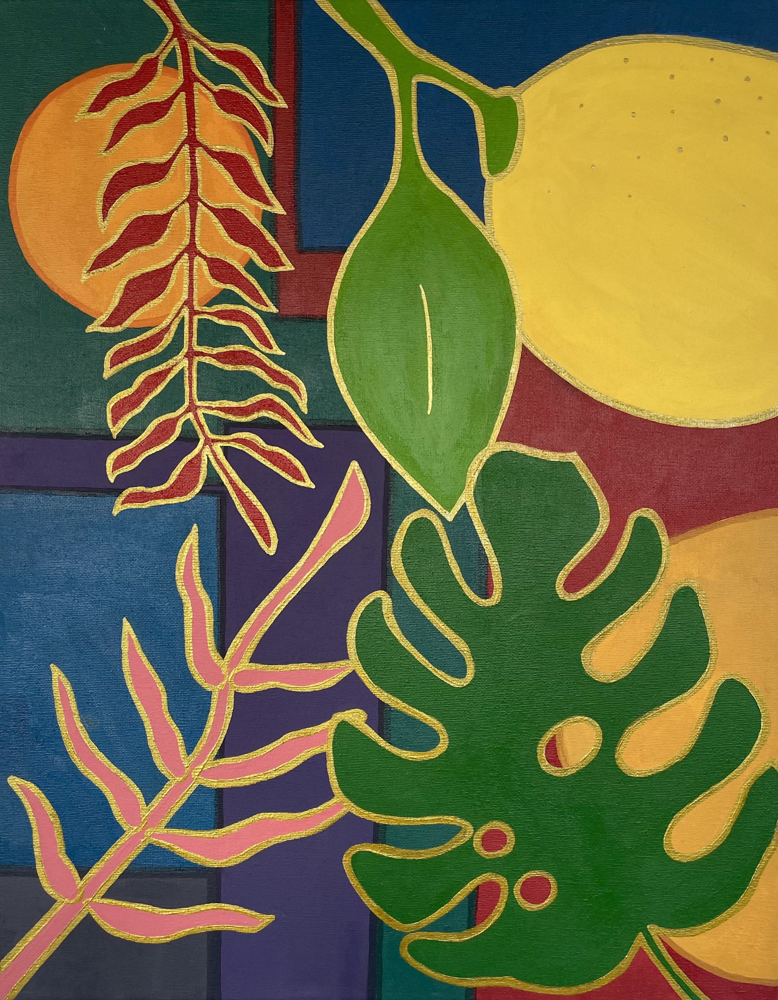
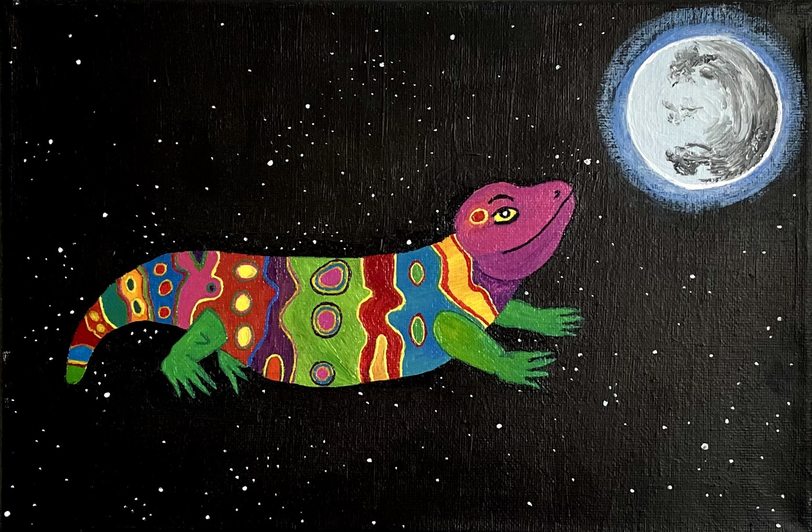
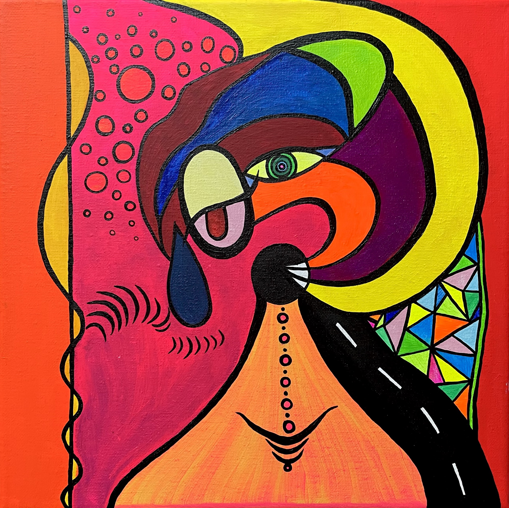
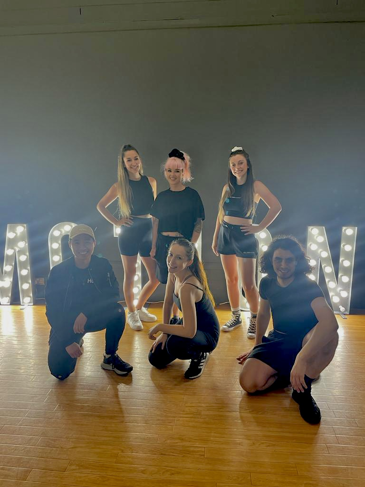
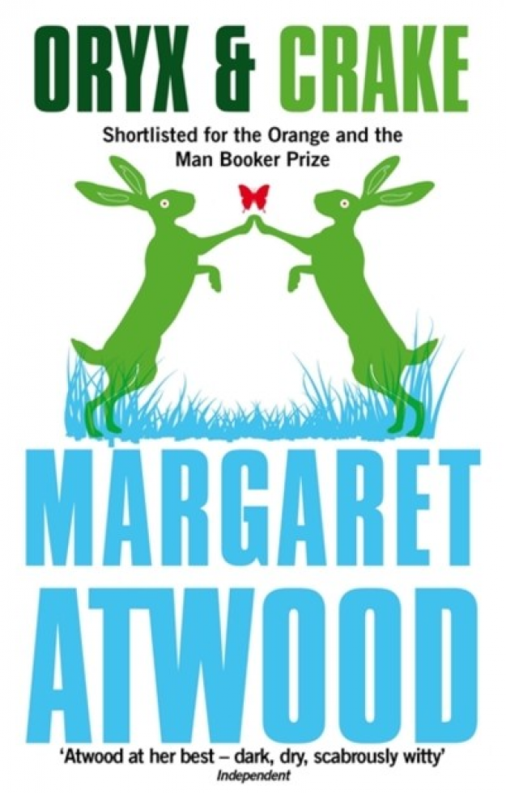
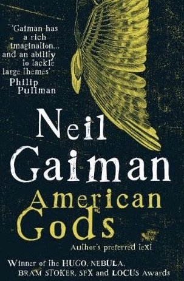
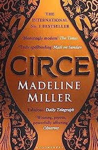

My main hobby is painting. I have tried a lot of different styles and mediums over the years but always come back to something strong, bright, and acrylic based.
Title: Zest
Title: Rainbow space lizard (aka Salma's vision)
Title: Discombobulated
In January 2023 I started dancing again for the first time in 10 years and I've been having such a fun time and building my confidence - I even performed in a show with our new 'beginners crew' in July!
Mostly I am guilty of buying more books than I can ever read...! But I do love reading, whether that is getting lost in a great story or learning something new - ideally both!
Some of my favourites are:


